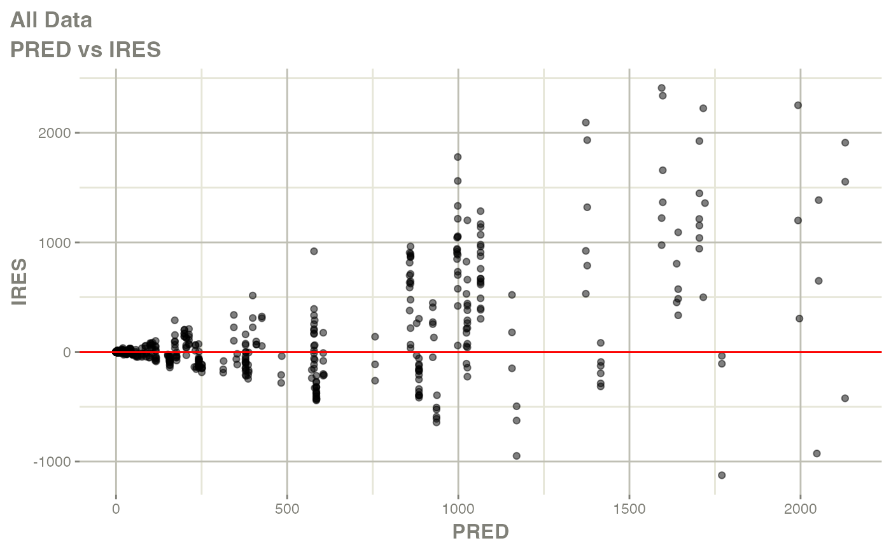

sad-study
sad-study.Rmd
sdtm <- new_sdtm(sdtmsyn::sdtm_data_sad) %>%
add_analyte_mapping('RS2023', 'RS2023')
nif <- new_nif(sdtm)
head(nif, 5)
#> REF ID STUDYID USUBJID AGE SEX RACE HEIGHT WEIGHT BMI
#> 1 1 1 2024000001 20240000011010005 48 0 WHITE 173.2 59.5 19.8345
#> 2 2 1 2024000001 20240000011010005 48 0 WHITE 173.2 59.5 19.8345
#> 3 3 1 2024000001 20240000011010005 48 0 WHITE 173.2 59.5 19.8345
#> 4 4 1 2024000001 20240000011010005 48 0 WHITE 173.2 59.5 19.8345
#> 5 5 1 2024000001 20240000011010005 48 0 WHITE 173.2 59.5 19.8345
#> DTC TIME NTIME TAFD TAD PCELTM EVID AMT ANALYTE CMT
#> 1 2001-01-01 07:33:00 0.000 0.0 -0.367 NA PT0H 0 0 RS2023 2
#> 2 2001-01-01 07:55:00 0.367 0.0 0.000 0.000 <NA> 1 10 RS2023 1
#> 3 2001-01-01 08:26:00 0.883 0.5 0.517 0.516 PT0.5H 0 0 RS2023 2
#> 4 2001-01-01 08:56:00 1.383 1.0 1.017 1.016 PT1H 0 0 RS2023 2
#> 5 2001-01-01 09:27:00 1.900 1.5 1.533 1.533 PT1.5H 0 0 RS2023 2
#> PARENT TRTDY METABOLITE DOSE DV MDV ACTARMCD
#> 1 RS2023 1 FALSE 10 0.0000 0 C2
#> 2 RS2023 1 FALSE 10 NA 1 C2
#> 3 RS2023 1 FALSE 10 4.1415 0 C2
#> 4 RS2023 1 FALSE 10 13.3774 0 C2
#> 5 RS2023 1 FALSE 10 26.5297 0 C2
#> IMPUTATION BL_CREAT BL_CRCL BL_RENAL
#> 1 80.30826 71.13499 mild
#> 2 admin time imputed from PCRFTDTC 80.30826 71.13499 mild
#> 3 80.30826 71.13499 mild
#> 4 80.30826 71.13499 mild
#> 5 80.30826 71.13499 mild
summary(nif)
#> ----- NONMEM input file (NIF) object summary -----
#> Data from 48 subjects across one study:
#> STUDYID N
#> 2024000001 48
#>
#> Males: 48, females: 0 (0%)
#>
#> Renal impairment class:
#> CLASS N
#> mild 9
#> normal 39
#>
#> Administered drugs:
#> RS2023
#>
#> Analytes:
#> RS2023
#>
#> Subjects per dose levels:
#> RS2023 N
#> 5 3
#> 10 3
#> 20 3
#> 50 3
#> 100 6
#> 200 3
#> 500 18
#> 800 6
#> 1000 3
#>
#> 768 observations:
#> CMT ANALYTE N
#> 2 RS2023 768
#>
#> Subjects with dose reductions
#> RS2023
#> 0
#>
#> Treatment duration overview:
#> PARENT min max mean median
#> RS2023 1 1 1 1
plot(nif, mean = F, min_time = 0, max_time = 12, points = T,
admin = "RS2023", log = T) +
watermark()
#> Warning: Removed 48 rows containing missing values or values outside the scale range
#> (`geom_line()`).
#> Warning: Removed 48 rows containing missing values or values outside the scale range
#> (`geom_point()`).
nca <- nif %>%
nca("RS2023")
nca %>%
nca_summary_table()
#> # A tibble: 9 × 7
#> # Groups: DOSE [9]
#> DOSE n aucinf.obs auclast cmax half.life tmax
#> <dbl> <int> <chr> <chr> <chr> <chr> <chr>
#> 1 5 3 80.4 (42) 74.69 (37) 17.17 (18) 14.2 (12) 2.03 (2.02; 4…
#> 2 10 3 250.35 (27) 216.57 (22) 44.04 (27) 12.24 (25) 3.05 (3.03; 3…
#> 3 20 3 268.73 (6) 255.88 (6) 67.98 (4) 16.83 (24) 2.03 (2.03; 3…
#> 4 50 3 773.36 (9) 728.54 (8) 171.36 (10) 16.61 (27) 2.03 (1.52; 3…
#> 5 100 6 1911.31 (24) 1739.85 (21) 396.58 (13) 13.08 (7) 3.03 (2.02; 4…
#> 6 200 3 3555.14 (23) 3273.73 (22) 736.46 (23) 12.95 (28) 3.03 (2.02; 3…
#> 7 500 18 9252.76 (32) 8485.37 (27) 2067.28 (15) 16.73 (27) 3.03 (1.53; 3…
#> 8 800 6 17096.11 (22) 15465.62 (19) 3473.23 (16) 16.21 (29) 3.03 (2.03; 4…
#> 9 1000 3 18350.04 (18) 16672.71 (19) 3627.8 (18) 12.04 (31) 3.05 (2.03; 4…
nca %>%
nca_power_model()
#> $cmax#>
#> $aucinf.obs
library(nlmixr2)
#> Loading required package: nlmixr2data
two.compartment <- function() {
ini({
tka <- log(0.3) #0.45 # Log Ka
tq <- log(2)
tcl <- log(20) #1 # Log Cl
tvc <- log(1000) #3.45 # Log Vc
tvp <- log(300) # Log Vp
eta.ka ~ 0.6 # IIV on ka
eta.q ~ 0.6
eta.cl ~ 0.3 # IIV on CL
# eta.vc ~ 0.1 # IIV on Vc
# eta.vp ~ 0.1 # IIV on Vp
prop.err <- 0.5
})
model({
ka <- exp(tka + eta.ka)
cl <- exp(tcl + eta.cl)
# vc <- exp(tvc + eta.vc)
vc <- exp(tvc)
# vp <- exp(tvp + eta.vp)
vp <- exp(tvp)
q <- exp(tq + eta.q)
linCmt() ~ prop(prop.err)
})
}
fit1 <- nlmixr2(two.compartment, nif, est="saem", saemControl(print=0))
#> ℹ parameter labels from comments are typically ignored in non-interactive mode
#> ℹ Need to run with the source intact to parse comments
#> → loading into symengine environment...
#> → pruning branches (`if`/`else`) of saem model...
#> ✔ done
#> → finding duplicate expressions in saem model...
#> [====|====|====|====|====|====|====|====|====|====] 0:00:00
#> ✔ done
#> ℹ calculate uninformed etas
#> ℹ done
#> rxode2 3.0.1 using 1 threads (see ?getRxThreads)
#> ========================================
#> rxode2 has not detected OpenMP support and will run in single-threaded mode
#> This is a Mac. Please read https://mac.r-project.org/openmp/
#> ========================================
#> Calculating covariance matrix
#> Error : Error calculating covariance via linearization
#> → loading into symengine environment...
#> → pruning branches (`if`/`else`) of saem model...
#> ✔ done
#> → finding duplicate expressions in saem predOnly model 0...
#> → finding duplicate expressions in saem predOnly model 1...
#> → finding duplicate expressions in saem predOnly model 2...
#> → optimizing duplicate expressions in saem predOnly model 2...
#> ✔ done
#> → Calculating residuals/tables
#> ✔ done
#> → compress origData in nlmixr2 object, save 188056
#> → compress phiM in nlmixr2 object, save 563328
#> → compress parHistData in nlmixr2 object, save 17176
#> → compress saem0 in nlmixr2 object, save 3072
fit1$parFixed
#> Est. SE %RSE Back-transformed(95%CI) BSV(CV%) Shrink(SD)%
#> tka -0.112 0.0147 13.1 0.894 (0.868, 0.92) 5.34 90.0%>
#> tq -3.22 0.0112 0.348 0.0399 (0.039, 0.0408) 4.70 84.1%>
#> tcl -3.68 0.087 2.37 0.0253 (0.0213, 0.03) 63.0 5.23%<
#> tvc -1.21 0.000164 0.0136 0.297 (0.297, 0.297)
#> tvp 4.22 0.000487 0.0115 67.9 (67.8, 68)
#> prop.err 0.657 0.657
plot(fit1)
#> Registered S3 method overwritten by 'DescTools':
#> method from
#> reorder.factor gdata#> Warning in ggplot2::scale_x_log10(): log-10 transformation
#> introduced infinite values.
#> Warning in ggplot2::scale_y_log10(): log-10 transformation
#> introduced infinite values.#> Warning in ggplot2::scale_x_log10(): log-10 transformation
#> introduced infinite values.#> Warning in ggplot2::scale_x_log10(): log-10 transformation
#> introduced infinite values.#> Warning in ggplot2::scale_x_log10(): log-10 transformation
#> introduced infinite values.#> Warning in ggplot2::scale_x_log10(): log-10 transformation
#> introduced infinite values.
#> Warning in ggplot2::scale_x_log10(): log-10 transformation
#> introduced infinite values.#> Warning in ggplot2::scale_x_log10(): log-10 transformation
#> introduced infinite values.#> Warning in ggplot2::scale_x_log10(): log-10 transformation
#> introduced infinite values.#> Warning in ggplot2::scale_x_log10(): log-10 transformation
#> introduced infinite values.#> Warning in ggplot2::scale_x_log10(): log-10 transformation
#> introduced infinite values.#> Warning: Removed 48 rows containing missing values or values outside the scale range
#> (`geom_point()`).#> Warning: Removed 48 rows containing missing values or values outside the scale range
#> (`geom_point()`).#> Warning: Removed 48 rows containing missing values or values outside the scale range
#> (`geom_point()`).
#> Warning: Removed 48 rows containing missing values or values outside the scale range
#> (`geom_point()`).#> Warning: Removed 48 rows containing missing values or values outside the scale range
#> (`geom_point()`).#> Warning: Removed 48 rows containing missing values or values outside the scale range
#> (`geom_point()`).
fit1 %>%
as.data.frame() %>%
filter(as.numeric(ID) > 30) %>%
ggplot(aes(x= TIME, y= DV, group = ID)) +
geom_point() +
geom_line(aes(x=TIME, y=IPRED, color = "red")) +
# scale_y_log10() +
theme_bw() +
facet_wrap(~ID) +
xlim(0, 24)
#> Warning: Removed 90 rows containing missing values or values outside the scale range
#> (`geom_point()`).
#> Warning: Removed 90 rows containing missing values or values outside the scale range
#> (`geom_line()`).